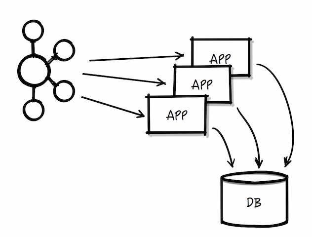

Welcome to Streaming Crash Course!
About Kafka streaming platform design
There were lots of databases and other systems built to store data, but what was missing in our architecture was something that would help us to handle the continuous flow of data treating it as a continually evolving and ever growing stream, and build a data system—and indeed a data architecture—oriented around that idea.

What's a streaming platform?
A system that lets you publish and subscribe to streams of data, store them, and process them
Differences with other architectures
With messaging systems:
-
It works as a modern distributed system (it can scale elastically)
-
It is a true storage system (it provides real delivery guarantees)
-
Its data is replicated, persistent, and can be kept around
-
It has a superior abstraction than just messages, that is stream processing
With log aggregation (Hadoop):
- It is a real time system
With ETL's:
- Not only can it connect off-the-shelf applications and data systems, it can power custom applications built to trigger off of these same data streams
We think this architecture centered around streams of events is a really important thing. In some ways these flows of data are the most central aspect of a modern digital company, as important as the cash flows you’d see in a financial statement.
Use cases
-
Message bus for event-driven micro services
-
Stream-processing applications
-
Large-scale data pipelines
The faster we can move and process data, the more agile and responsive our organizations can be. The less effort we spend on moving data around, the more we can focus on the core business at hand. This is why the pipeline is a critical component in the data-driven enterprise. How we move the data becomes nearly as important as the data itself.
Pub/Sub
Many use cases for publish/subscribe start out the same way: with a simple message queue or interprocess communication channel.
What's Kafka?
Kafka is a publish/subscribe messaging system often described as a "distributed commit log" or more recently as a "distributing streaming platform."
A filesystem or database commit log is designed to provide a durable record of all transactions so that they can be replayed to consistently build the state of a system. Similarly, data within Kafka is stored durably, in order, and can be read deterministically. In addition, the data can be distributed within the system to provide additional protections against failures, as well as significant opportunities for scaling performance.